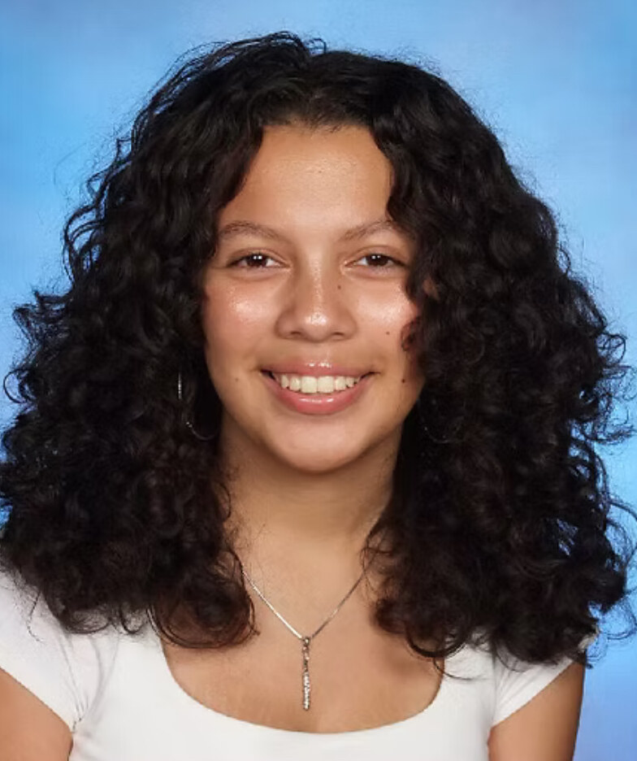

I play flute and piccolo, and I love all things art. I'll soon be a 2027 Hopatcong High School graduate. I am eternally grateful to co-exist with art and all the opportunities it has given me to find myself.
Selected as 1 of 21 students statewide from over 200 applicants to advocate for arts education. Met weekly for 19 sessions. Spoke to senators and legislators in Washington, D.C. for Art Pride Day.
View on Instagram →Selected to participate in a statewide podcast discussing music and arts education.
Listen on Spotify →Stepped in to design the concert programs, saving the organization thousands of dollars every year.
Selected to lead the flute section of the county's youth orchestra across four seasons of performances.
Leading the band through a year of organizational change, and now returning for my senior year to lead the biggest season yet.
Awarded a statewide scholarship recognizing achievement and promise in flute performance.
View Results →Flute: 1st in All-Sussex County since 2023, and 2nd in the North Jersey Area since 2024.
Piccolo: 1st in All-Sussex County since 2024; 2nd in the North Jersey Area in 2024, then 1st in that same area in 2025.
2026 so far: 2nd in the Northern Jersey Region, and 4th in the state of New Jersey.
Nominated five times under both musical performance and visual arts.